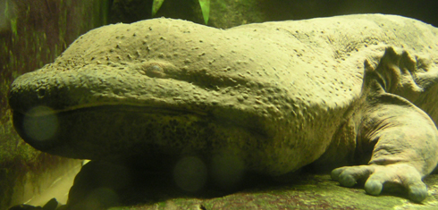

Chinese Giant Salamander

- Price:
- $20000.00
- Food:
- Anything edible but not dangerous.
- Housing:
- Terrarium
- Qty:
- 5
Description:
Enter the worlds largest amphibian, the Chinese Giant Salamander. Sadly, they are also critically endangered due to the loss of their natural habitat... These things can grow up to 180cm and weigh about 25-30 kg (adult). Giant Salamanders have poor vision due to their tiny eyes but they have many sensory organs to compensate. Their diet consists of pretty much anything thats edible (fish, insects, mammals etc.) which gives you a range of options for feeding one. In addition, these amphibians have an extremely slow metabolism so they do not need to eat much at all.